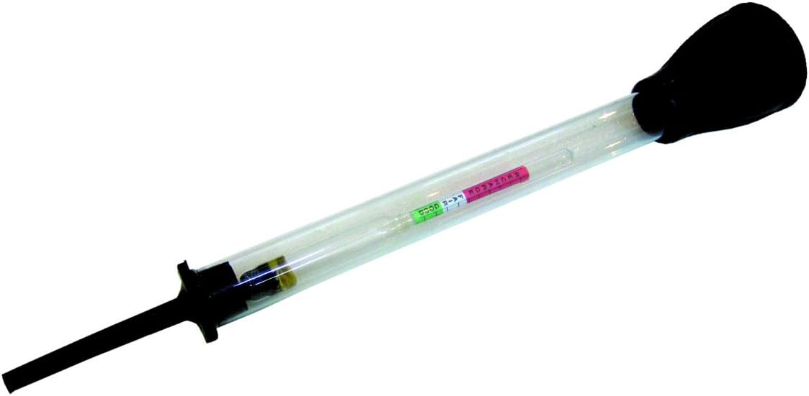
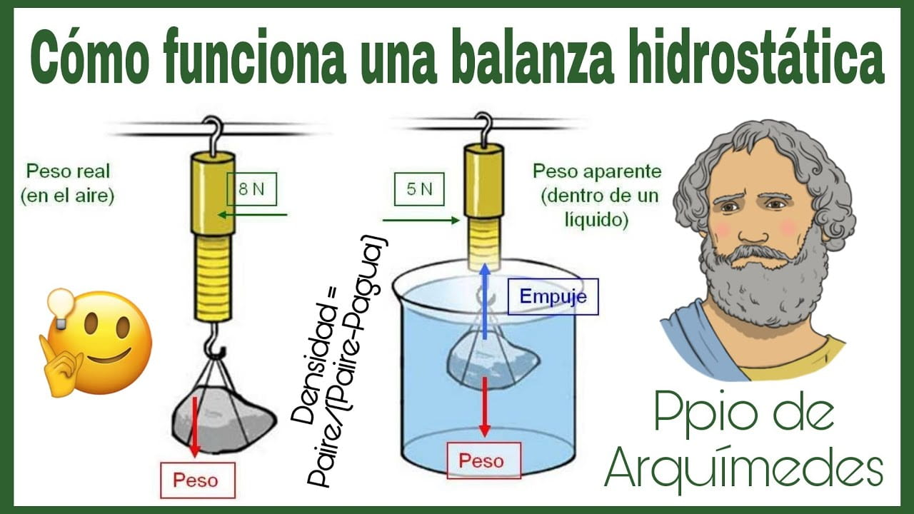

A veces vemos dos objetos que "ocupan el mismo espacio"… pero uno de ellos "pesa" más. Esto sucede porque es más denso. Por ejemplo, una tabla de madera y otra de mármol que tengan igual forma y tamaño… tienen una masa muy diferente, ¿verdad? Además, todos hemos oído (o incluso experimentado) que el agua y el aceite no se mezclan "porque tienen diferente densidad".
Los átomos de un cuerpo pueden estar más o menos juntos, es decir, en un mismo espacio puede haber más o menos átomos.
Un cuerpo denso es aquel que tiene muchos átomos en un espacio determinado, es decir, sus átomos están muy juntos. Si, por el contrario, hay mucho espacio entre los mismos será poco denso.
Densidad.
|
A la división entre la masa y el volumen de un cuerpo se le llama densidad (\(\boldsymbol{\color{green}{\rho}}\)). Su unidad en el Sistema Internacional es kilogramo por metro cúbico (kg/m³), aunque frecuentemente también es expresada en g/cm³. |
Luego si conocemos la masa (\(m\)) y el volumen (\(V\)) que ocupa un cuerpo podemos calcular su densidad (\(\rho\)), mediante la fórmula \[\boldsymbol{\color{green}{\rho=\dfrac{m}{V}}}\]
Líquidos
Cuando estudiamos la densidad de líquidos se suele usar el kilogramo por litro o el kilogramo por decímetro cúbico. La densidad del agua es aproximadamente 1 kg/l
Piensa.
Si dos objetos ocupan el mismo volumen, ¿Cuál será más denso, el que tenga más masa o el que tenga menos?
Será más denso el que tenga más masa. Si nos fijamos en la fórmula, vemos que la masa se encuentra en el numerador de la fracción. Solo tenemos que recordar que si comparamos fracciones con igual denominador, será mayor la que tenga el número más grande en el numerador.
Ejercicio resuelto.
Calcula la densidad de una madera cuya masa es de 60 g, y que ocupa un volumen de 80 cm3.
Expresa el resultado en las unidades del Sistema Internacional.
La unidad de la masa del sistema internacional es el kg, luego la masa de la madera es de 0,06 kg.
La unidad en el sistema internacional del volumen es el m3, luego el volumen que ocupa es de 0,00008 m3.
Por lo que la densidad será: \[\rho=\dfrac{0,06}{0,00008}=750 \ \text{kg/m}^3\]
Instrumentos para medir la densidad.
La densidad puede obtenerse de forma indirecta y de forma directa. Para la obtención indirecta de la densidad, se miden la masa y el volumen por separado y posteriormente se calcula la densidad. La masa se mide habitualmente con una balanza, mientras que el volumen puede medirse determinando la forma del objeto y midiendo las dimensiones apropiadas o mediante el desplazamiento de un líquido, entre otros métodos.
También existen instrumentos para medir la densidad de forma directa, pero algunos dependen del estado en el que se encuentre la materia. Por ejemplo, utilizamos el densímetro, para medir la densidad de un líquido o una balanza hidrostática para medir la densidad de un sólido.


Arquímedes y la densidad de los cuerpos.
A partir del siguiente vídeo de la entrañable serie "Érase una vez los inventores" puedes descubrir cómo se puede calcular la densidad de un cuerpo con una balanza y un recipiente de agua. En este principio se basa la balanza hidrostática.
Para saber más
La densidad es una magnitud intensiva ya que no varía con la cantidad de sustancia. Por ejemplo, la densidad del agua es de 1 g/cm3. Si tenemos 10 gramos o 200 gramos de agua el valor de la densidad será el mismo ya que al aumentar la masa también aumentará el volumen, y al hacer la división entre masa y volumen obtendremos el mismo valor de densidad.